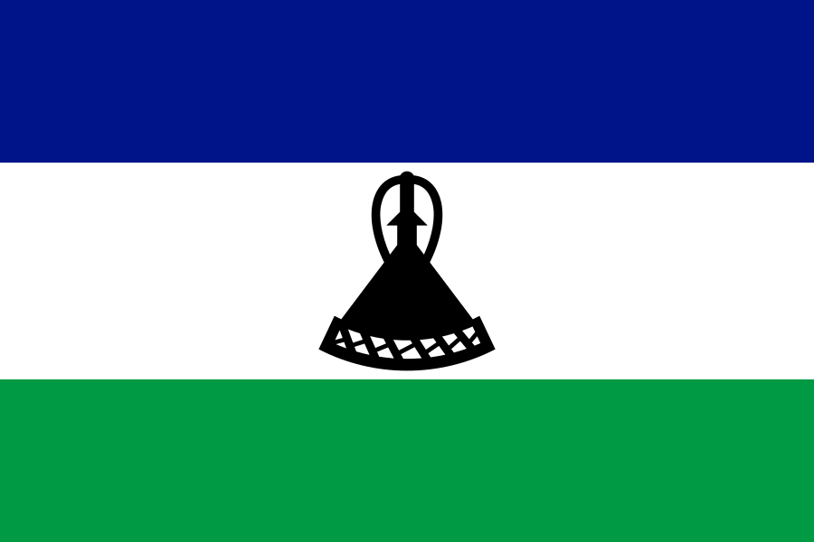

About Lesotho

The Mountain Kingdom
Lesotho, officially the Kingdom of Lesotho, is a uniquely beautiful, landlocked nation completely encircled by South Africa, earning it the nickname "Kingdom in the Sky" due to its status as the only independent country lying entirely above 1,000 meters in elevation. Founded in the 1820s by King Moshoeshoe I, who strategically utilized the rugged Maloti and Drakensberg mountain ranges as natural fortresses, the nation achieved independence from British colonial rule in 1966 and today operates as a stable constitutional monarchy. Its population is remarkably homogeneous, with over 99% identifying as Basotho, a people deeply proud of their rich heritage, which is visibly symbolized by the iconic Mokorotlo straw hat and vibrant, traditional wool Basotho blankets. Economically, the country relies on agriculture, diamond mining, and a robust textile sector, while leveraging its abundant mountain water—often called "white gold"—to export electricity and fresh water to South Africa through a massive national water engineering project.